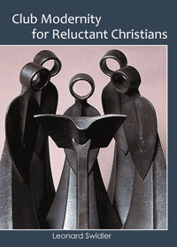

An invitation to reflect on the core values of spirituality
An invitation to reflect on the core values of spirituality


 An invitation to reflect on the core values of spirituality
An invitation to reflect on the core values of spirituality

|  |
Club Modernity for Reluctant ChristiansLeonard Swidlerpaper EAN: 978-0-93121-412-7 (ISBN: 0931214122) |
People who live in the mental world of Modernity cherish freedom at the core of being human, critical thinking as the arbiter of what to affirm—or not. History-evolution becomes the heart of human life, society, and all reality, and many ascribe to the benefits of cultural/religious pluralism. These stances require dialogue with those who do not share the same ones. In that dialogue all seek a depth and spiritual dimension in our everyday experiences.
Club Modernity for Reluctant Christians provides reflections on the ultimate meaning of life that begin with our human experiences. Leonard Swidler rigorously pursues the questions raised within the context of freedom, critical-thinking, historical sensibility, and dialogue with the world—ultimately leading to an inner encounter with the Transcendent.
This book will resonate for Christians, or �reluctant Christians,� who are having difficulty reconciling these core characteristics of Modernity with their religious faith.
Leonard Swidler has been a Professor of Religion at Temple University since 1966. He is the author or editor of over 70 books and 200 articles. He is the founder of the Dialogue Institute (http://www.jesdialogue.org), and, with his wife Arlene Anderson Swidler, of the Journal of Ecumenical Studies.
© 2015 Temple University. All Rights Reserved. This page: http://www.temple.edu/tempress/titles/2190_reg.html.